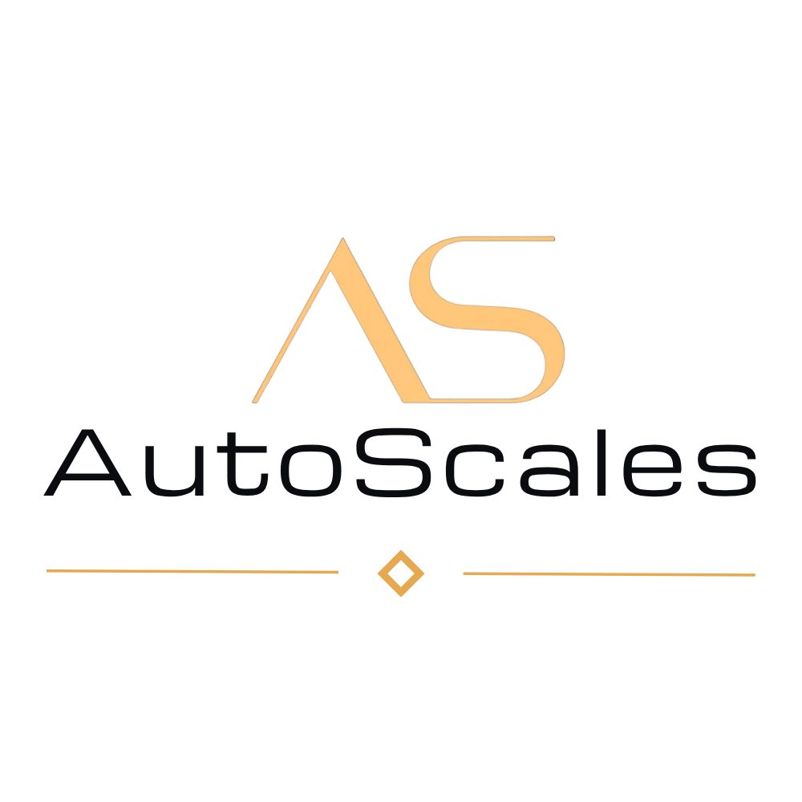
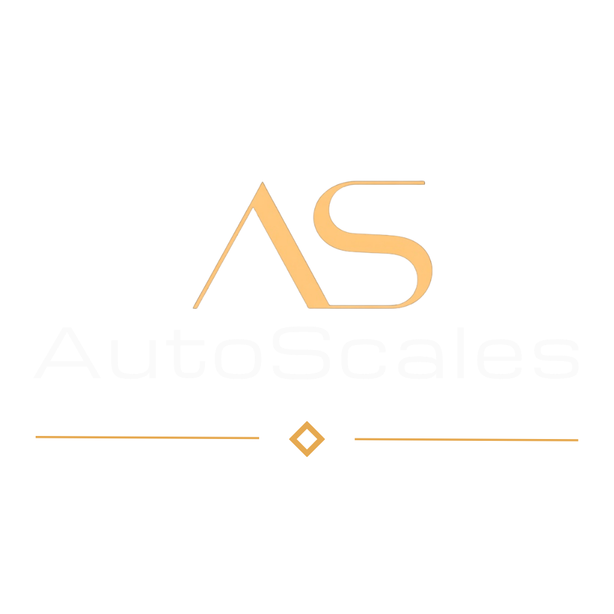

TestfassungNeues Fahrzeug
Zehn Fotos, ein Fahrzeug. Die App führt Sie durch jede Position.
6 Außenbilder in fester Reihenfolge, dann 4 innen
Handy quer, Kamera 1x, ruhig halten. Die App löst selbst aus.
Das ganze Auto mit etwas Rand in die Schablone
Auto-Erkennung: Beim Anlegen lädt die App einmalig rund 20 MB im Hintergrund (der Browser merkt sich das). Danach prüft sie im Sucher auf dem Gerät, ob das Auto in der Schablone steht. Das Kamerabild bleibt auf dem Gerät. Ohne Erkennung bleibt die Schablone eine Orientierung.
Mehr Hinweise
- Handy leicht nach unten neigen (ca. 10°); die Wasserwaage zeigt es.
- Du siehst jedes Foto und tippst Passt oder Neu. Erst bei „Passt“ geht es hoch.
- Zusatzbilder sind freiwillig. Die Karosserie bestimmt nur die Schablone im Sucher; sie ist eine Orientierung, kein Abgleich.
Testfassung: bitte nur Testfotos, keine Kundenfahrzeuge mit Personen oder Papieren. Die App schickt Fotos nur an den eingetragenen Test-Server der AutoScales GmbH i.G. (EU, Irland). Auf dem Handy bleiben nur Fotos, die noch nicht hochgeladen sind, bis sie gesendet wurden.